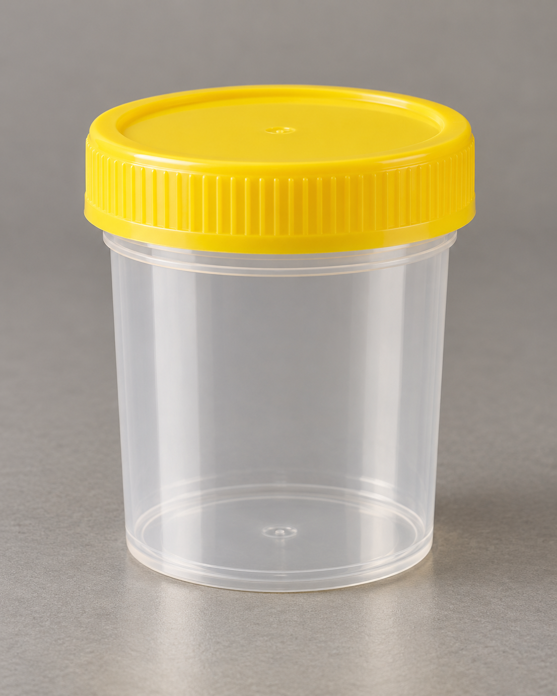

Urine specimen
Sterile collection cup
Test-specific collection
01UTI PCR Panel
Urine specimen
Sterile collection cup

Service 01Specimen: Confirm UTI PCR Panel collection requirementsTurnaround: [Confirm]
UTI PCR Panel
Treat the cause. Not the guess.
Our PCR-based UTI testing detects the pathogens behind infection with high sensitivity, supporting targeted treatment in routine and complex cases.
- Molecular-level pathogen detection
- Supports faster, better-informed treatment decisions
- Valuable in recurrent or unresolved cases
- Detects common antibiotic resistance genes to help guide antibiotic selection
- Sample:
- Urine
- Turnaround:
- To be confirmed